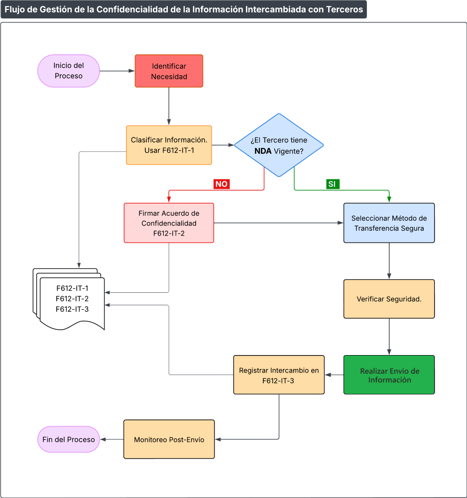

Procedimiento de Gestión de la Confidencialidad de la Información Intercambiada con Terceros
1 OBJETIVO
Establecer el proceso detallado para garantizar la confidencialidad de la información intercambiada con terceros, implementando la política MC612-IT-1 Política Confidencialidad de la Información Intercambiada con Terceros y asegurando el cumplimiento de los requisitos de protección de ISO/IEC 27001:2022, así como con los requisitos del marco TISAX.
2 ALCANCE
Aplica a todos los procesos de intercambio de información con entidades externas a PRODISMO SRL.
3 PROCESO DETALLADO
3.1. Fase de Preparación
Paso 1: Identificación de Necesidad
- Responsable de área identifica información a compartir
- Justifica la necesidad del intercambio
- Establece alcance y destinatarios
Paso 2: Clasificación de Información
- Completar
F612-IT-1 Formulario de Clasificación de Información a Compartir - Determinar nivel de confidencialidad:
- PÚBLICA: Manuales corporativos, información de marketing
- INTERNA: Procedimientos operativos, organigramas
- CONFIDENCIAL: Especificaciones técnicas, planes de producción
- ALTAMENTE CONFIDENCIAL: Diseños 3D, información financiera, datos de clientes o proveedores estratégicos
Paso 3: Evaluación de Tercero
- Verificar que el tercero tenga acuerdo de confidencialidad vigente
- Si no tiene, iniciar proceso de firma de
F612-IT-2 Plantilla de Acuerdo de Confidencialidad (NDA) y Cláusulas de Seguridad - Validar identidad y autorización del contacto
3.2. Fase de Transmisión
Paso 4: Selección de Método de Transmisión
Según clasificación y tipo de información:
| Clasificación | Métodos Autorizados |
|---|---|
| PÚBLICA | Email estándar, portal web |
| INTERNA | Email corporativo, Microsoft SharePoint |
| CONFIDENCIAL | Email cifrado, VPN, plataforma segura autorizada |
Paso 5: Verificación de Transmisión Segura
- Verificar:
- Destinatario correcto
- Método de envío apropiado
- Cifrado aplicado si corresponde
- Acuse de recibo requerido
Paso 6: Ejecución del Envío
- Realizar envío según método seleccionado
- Obtener confirmación de recepción
- Documentar en F612-IT-3 Registro de Información Compartida con Terceros
3.3. Fase de Seguimiento
Paso 7: Registro y Trazabilidad
- Actualizar registro inmediatamente después del envío F612-IT-3 Registro de Información Compartida con Terceros
- Incluir:
- Fecha y hora de envío
- Información transmitida
- Método utilizado
- Persona de contacto en tercero
- Acuerdo de confidencialidad aplicable
Paso 8: Monitoreo Post-Transmisión
- Verificar uso adecuado de la información
- Seguimiento según periodicidad definida en acuerdo
- Reportar anomalías al RSI
4 FLUJOGRAMA DEL PROCESO

Flujograma del proceso de gestión de confidencialidad con terceros
5 FORMULARIOS Y REGISTROS
5.1. F612-IT-1: Formulario de Clasificación de Información a Compartir
- Descripción de información a compartir
- Clasificación propuesta
- Tercero destinatario
- Período de confidencialidad requerido
5.2. F612-IT-2: Acuerdo de Confidencialidad Especifico
- Cláusulas estándar de protección
- Definiciones específicas de información confidencial
- Obligaciones de las partes
- Sanciones y jurisdicción
- Anexos con información específica protegida
5.3. F612-IT-3: Registro de Intercambios
- Base de datos centralizada de todos los intercambios
- Campos: ID único, fecha, información, tercero, método, acuerdo, responsable
- Búsqueda y filtrado por múltiples criterios
6 CAPACITACIÓN Y CONCIENTIZACIÓN
6.1. Programa de Capacitación
- Sesión inicial para nuevos empleados
- Actualización anual obligatoria
- Material de apoyo disponible en Equipo IT de la Plataforma MS Teams
6.2. Contenido de Capacitación
- Políticas y procedimientos de confidencialidad
- Clasificación de información
- Métodos de transmisión segura
- Manejo de incidentes
- Responsabilidades individuales
7 GESTIÓN DE INCIDENTES
7.1. Detección y Reporte
- Cualquier empleado que detecte posible divulgación no autorizada debe reportar inmediatamente
- Canal: itprodismo@prodismo.com
- No iniciar investigación individual
7.2. Procedimiento de Respuesta
- RSI activa protocolo de investigación
- Preservar evidencias
- Notificar a Departamento Legal, si corresponde
- Evaluar impacto y notificar afectados, si corresponde
8 AUDITORÍA Y CUMPLIMIENTO
8.1. Auditorías Internas
- Muestreo mensual de intercambios registrados
- Verificación de cumplimiento de procedimientos
- Reporte de hallazgos a Alta Dirección
8.2. Métricas de Desempeño
- Tiempo promedio de clasificación: Objetivo < 2 días hábiles
- Porcentaje de intercambios correctamente registrados: Objetivo 100%
- Incidentes de confidencialidad por trimestre: Objetivo 0
9 ACTUALIZACIÓN DEL PROCEDIMIENTO
- Revisión semestral por el RSI
- Actualización ante cambios tecnológicos
- Incorporación de lecciones aprendidas
10 REVISIONES DEL DOCUMENTO
| Rev. N° | Fecha | Descripción |
|---|---|---|
| 0 | 25/8/2025 | Primera Emisión del documento |
| 1 | 6/4/2026 | Actualización general del documento |